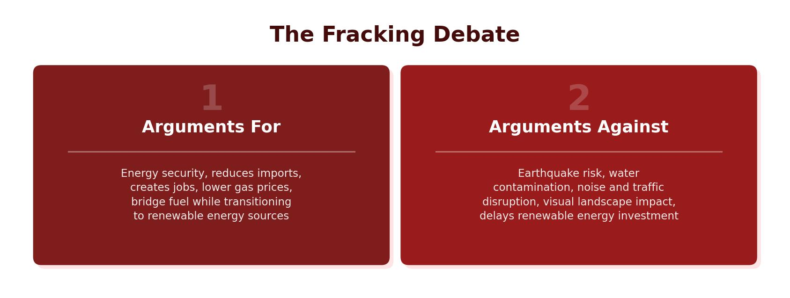

Impacts of Energy Insecurity
When countries develop, they consume more energy. If demand outstrips supply, the result is energy insecurity. This can have serious consequences for people and the environment:
- Blackouts — when energy supply cannot meet demand, power is cut off. People lose electricity for lighting, heating and cooking, reducing quality of life. In South Africa, electricity is regularly switched off from homes and diverted to industry during peak demand.
- Industrial output — industries may close or reduce production. People lose their jobs and have less income.
- Food production — farming relies on energy for machinery, irrigation and transport. Reduced energy leads to less food, higher prices and potential food shortages.
- Environmental damage — oil and gas pipelines are difficult to maintain and leaks can pollute soil, rivers and oceans, harming ecosystems and people’s health.
- Conflict — the need for energy security can cause conflict between nations. Many recent wars in the Middle East have been partly driven by competition over oil and gas supplies.
All of these impacts are connected. Blackouts reduce industrial output, which reduces employment and income. Less food production leads to higher prices and hunger. Competition for dwindling supplies can trigger conflict. The overall effect is a reduction in quality of life, especially in LICs that lack the resources to find alternatives.

What Is Fracking?
Fracking (hydraulic fracturing) is a method of extracting natural gas from shale rock deep underground. It was developed as technology advanced enough to reach energy sources that were previously unobtainable. Fracking could be possible in many parts of Great Britain, with the main concentrations in the North East and North West of England and eastern Wales.
How Does Fracking Work?
The process involves several stages:
- A well is drilled deep into the ground, reaching the shale rock layer.
- Water, sand and chemicals are injected into the well at very high pressure (hydraulic force).
- This creates fissures (cracks) in the shale rock, releasing the trapped gas.
- The gas flows out through the well and is piped away for commercial use.
Fracking in the UK — The Blackpool Case Study
Cuadrilla was the company responsible for fracking operations near Blackpool in Lancashire. This became one of the UK’s most controversial energy debates.
Arguments For Fracking
- Fracking creates a more reliable energy supply for the UK, potentially reducing energy prices by up to 2% per year.
- Cuadrilla created 120 jobs at its fracking sites near Blackpool.
- Fracking sites would earn Blackpool Council £1.7 million per year in business rates.
- Gas produces less CO&sub2; than coal when burned, so it is a cleaner fossil fuel.
- It reduces the UK’s reliance on importing gas from other countries, improving energy security.
Arguments Against Fracking
- Drilling can cause gas and oil to mix with underground water supplies. Methane has been found in water near fracking sites, making it contaminated and unusable.
- There have been three small earthquakes near Blackpool (magnitude 3 on the Richter Scale) linked to fracking activity.
- Gas and oil are often transported by lorries, causing noise pollution and traffic congestion on the M55 and A583 — roads that are already busy, especially in summer.
- Local residents and environmental groups strongly opposed the operations due to health and environmental concerns.
Fracking in the UK was suspended in 2019 after a magnitude 2.9 earthquake near Blackpool. The government imposed a moratorium (temporary ban) due to the inability to predict the scale of earthquakes that fracking would cause. Despite potential energy security benefits, the environmental and community risks were judged too great.
In HICs like the UK, energy insecurity leads to higher bills and reduced industrial competitiveness, but the government can invest in alternatives and imports. In LICs, the effects are far more severe: frequent blackouts shut down hospitals and schools, families burn wood for fuel (causing deforestation and indoor air pollution), and food shortages can lead to malnutrition. People in LICs who cannot afford generators simply go without power, while wealthier households in countries like South Africa can buy diesel generators to cope with outages.